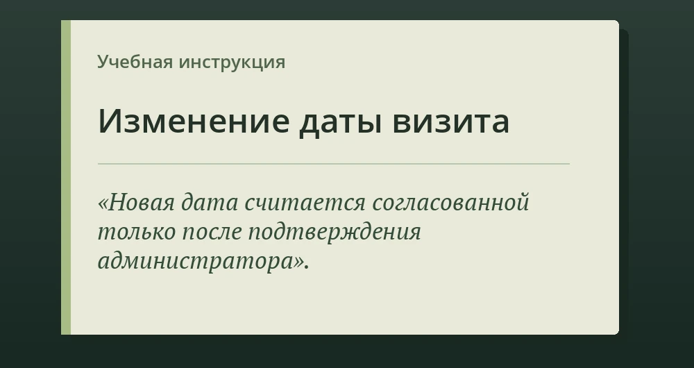

Помощник по правилам компании
Материал показа · русский учебный регламент · Показ по договорённости · Текущий запуск не подтверждён
Например, клиент хочет перенести визит. Сотруднику нужно узнать, кому написать и когда новая дата считается согласованной. В приложенном регламенте можно прочитать оба правила.
Для вашей команды я помогу подготовить документы, согласовать доступ и проверить ответы на ваших рабочих вопросах. В проекте проверяли загрузку текстовых документов, поиск и отдельный ответ с моделью Яндекса. Здесь показан исходный регламент.
Адрес бота этого проекта — @KnowledgePilotBot. Доступность живого показа нужно уточнить у Василия.


Пример ответа ИИ
Автоматическая проверка: вопрос задан программно, ответ получен от YandexGPT Pro 5.1 через настоящий API. Это текстовый протокол, не снимок Telegram.